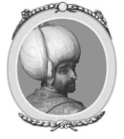
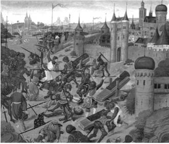
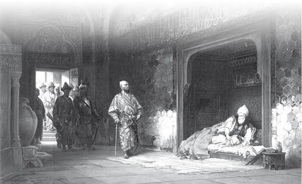
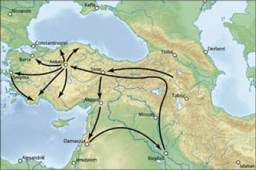

IV : I. BAYEZİD
1389-1403

Beyazıd otuz dört yaşındayken babasının yerine tahta geçti. Sadece on dört yıl hükümdar olarak kaldı ve son yılları ise esaretle geçti. Hiçbir Osmanlı soyu böylesine inişli çıkışlı bir dönem geçirmedi. Hükümdarlığı sürecince göz kamaştırıcı bir başarı gösterdi, zaferler kazandı daha sonra bu dönemi ezici bir yenilgiyle bitirdi. İlk üç yılı boyunca muhteşem bir cesaret örneği göstermiştir ve harika askerî kabiliyeti vardı. Büyük bir gaddarlık ve zalimlikle hükmetmiştir. Özel hayatında ise ahlakî zafiyeti ve duyarsızlığı ile ağza alınmaz ve küçük düşürücü kötü alışkanlıkları vardı ki, bunlar askerler tarafından hiç görülmemişti.
Hükümdarlığının ilk zamanlarında Avrupa’nın Hıristiyan güçlerine karşı Murad’dan daha akılcı tutumlar sergiledi. Ticarî imtiyazlarda yenilik yapmayı isteyen İtalya’dan gelen bir elçiye, Macaristan’ı ele geçirdiğinde Roma’ya ilerleme niyetinde olduğunu ve Aziz Peter Kilisesi’nin mihrabındaki yulaflarla atını beslemek istediğini söyledi. Ona bağlı olan Hıristiyan topluluğuna daha önce hiçbir selefi bu denli sert davranmamıştı.
Bayezid Kosova’da Sırplara karşı zafer kazanarak babasının yolundan devam etti. Lazar’dan sonra tahta çıkan Stephen’i zorlayarak barış talep etti. O zaman yapılan anlaşma son derece makuldü. Bulgaristan gibi Osmanlı ile birleşmek yerine Sırbistan, özerk bir devlet olarak kaldı ve Osmanlı tımarına girdi. Vergi ödemeyi ve sultanın kullanması için beş bin asker vermeyi kabul etti. Ayrıca Prens Stephen kız kardeşi Despina’yı sultana eş olması için yolladı. Çoğunlukla ve sadakatle Bayezid’e verdiği sözleri yerine getirdi.
Macarlara ve Batı Avrupa’dan gelen Haçlılara karşı Büyük Nicopolis Savaşı’nda (Niğbolu Muharebesi), sonra Angora’da (Ankara) Timur’a karşı yapılan savaşta Sırpların yolladığı askerler büyük bir cesaretle savaştı. Osmanlı birliğinde artık sadık asker kalmamıştı.
Sırbistan ile anlaşmaya vardıktan sonra Bayezid ordusuyla beraber güneye doğru ilerledi ve İstanbul’un yakınlarında tehditkâr bir biçimde konuşlandı. İstanbul’un başında hâlâ geçmiş yaşına ve kuvvetsiz durumuna rağmen John Palaiologos ve yanında da oğlu Manuel bulunuyordu. Andronicus’un imparatora karşı başlattığı ayaklanmayı öne sürerek tehditlerde bulundu ki, söz verdikleri halde Andronicu’un gözleri hâlâ yerindeydi. Ayaklanmadan sonra sultan imparatora zorla anlaşma imzalatmıştı, buna göre de Rum İmparatorluğu’nun geri kalan toprakları, Osmanlı’nın rezil bir tımarı olacaktı. İmparatorlar yıllık olarak otuz bin parça altın ve Osmanlı ordusuna, sultana herhangi bir durum için ihtiyacı olduğunda gönderilmesi için on iki bin asker sözü verdi. Ayrıca Osmanlı’ya Bizans İmparatorluğu’nun Küçük Asya’da bulunan tek egemen olduğu Philadelphia Kalesi’nin teslim olması için yardım etti. Ancak şehrin komutasını yürüten asker teslim olmayı reddedince, Bayezid Bizans imparatorunun askerlerini kullanarak kendi şehrini ele geçirmesini istedi. Daha sonra kendisinin liderliğinde ve oğlu Manuel’in yardımıyla Osmanlı’nın ellerine kendi şehrini, sözde müttefiki aslında kurnaz ve komplocu düşmanları vermek için saldırdı. İmparator ve oğlunun içine düştükleri bu aşağılayıcı ve korkakça tavrın daha kötüsü hayal bile edilemezdi. Halkın aşağılamaları ilerki günlerde yurt içinde daha da şiddetlendi. Bayezid, denizde bir yelkenliyi esir alarak, Manuel’in eşi olması için bir prenses getirdi; ancak daha sonra prensesi çok beğendi ve kendi haremine sokmak için ısrar etti.
Daha sonra Bayezid bütün ilgisini topraklarına katmak istediği Küçük Asya’ya çevirdi. Bunun için ilk çabası Aidin’e (Aydın) oldu. Aydın beyini yendikten ve bölgesini topraklarına ekledikten sonra Saruhan ve Menteşe Beylikleri ile aynı şekilde ilgilendi. Bu seferden sonra da Kudüs Şövalyesi Aziz John’un egemenliğinde olan Smyrna’ya (İzmir) saldırdı. Şövalye güçlü bir direnç gösterdi ve denizlerde egemenliği olmayan Bayezid zorlandı, tam altı hafta sonra kuşatmadan geri çekildi. 1391 yılında Tekke beyine saldırdı, Murad zamanında elinde ne kaldıysa onların hepsini ve en önemli şehirleri olan Adalia’yı (Antalya) aldı. Osmanlı artık Karamania (Karaman) ile sınır komşusu olmuştu. Karamania’nın (Karaman) Beyi Alaaddin’di ve aynı zamanda sultanın kayınbiraderi oluyordu. Ancak aile bağları kendisini hiçbir şeyden korumuyordu. Bayezid Konya’yı kuşatarak ele geçirdi. Alaaddin Akşehir ile beraber beyliğinin bir bölümünü vermeği taahhüt edince geri çekildi.
Birçok yeri topraklarına eklemeyi başardı, bu başarısının hiçbir adil yönü yoktu, sadece imparatorluğunu daha da genişletmek için açlık duyuyordu. Bayezid, fethedilen bölgelerde komutanı Timurtaş’ı bırakarak Adrianopol’ye (Edirne) geri döndü. Bu arada Rum İmparatoru John, başkentini savunabilmek için çeşitli değişiklikler yapmaya başladı. Bu sebeple, şehrin etrafına hisar inşa edebilmek için İstanbul’daki çok önemli üç kiliseyi yıkıp duvarlarını kullandı. Sultan, imparatorun yaptıklarını öğrenince ona bir haber yollatarak, üzerinde çalıştıkları yapıdan vazgeçmelerini emretti ve Manuel’i kör etmekle tehdit etti. İmparatorun itaat etmekten başka şansı yoktu. Ancak bu onun katlanabileceği son aşağılanmasıydı. Bundan kısa bir süre sonra öldü, bazı tarihçilere göre imparator kaygı ve korkularının ağır baskısıyla can verdi, diğer tarihçiler ise gut hastalığı ve ayyaşlıktan öldüğünü söylüyor. Sultanın sarayında gözaltında olmasına rağmen damat gibi davranan Manuel, babasının ölümünü duyduktan sonra gizlice kaçarak, tahtın sahibi olarak gösterildiği İstanbul’a gitti. Buna karşılık Bayezid misilleme yaparak İstanbul’un bütün topraklarını ablukaya aldı. bu savaş yaklaşık yedi yıl sürdü. Neredeyse şehrin topraklar işgal edilmek üzereydi, ancak Timur’un Küçük Asya’yı kuşatmaya başlaması Bayezid’in ilgisini başka yöne çekti ve İstanbul kuşatması sona erdi.
Başlattığı ablukayı devam ettirebilmesi için Bayezid arkasında bir komutan bıraktı ve Rum garnizonunu gece gündüz aralıksız saldırılarla taciz etmesini emretti. Daha sonra Bayezid büyük bir orduyla Bulgaristan’a yürüdü ve Eflak eyaleti prensini zorlayarak Osmanlı İmparatorluğu tımarına girmesini sağladı. Ordusunun bir bölümü ayrılarak Syrmia’ya ilerleyip Macarlar ile savaşa girdi. Ordu yenilgiye uğrayarak geri püskürtüldü, böylece Macar Kralı Sigismund’a karşı taarruz şansı verdiler, bu sayede çok önemli ve güçlü olan Nicopolis’i (Niğbolu) kuşattı. Bunun üzerine Bayezid’in Eflaklardan aldığı yardım ile şehri terk etmek zorunda kaldı. Geri çekilme sırasında Hunyadi Dükü Sigismund, Elizabeth Moronay ile karşılaşarak kendisine hayran kaldı. Bu evlilik dışı ilişkiden meydana gelen çocuk, daha sonra Türklere karşı aktif rol oynayacak olan ünlü Macar Kahramanı Büyük Hunyadi’ydi.
1393 yılında Bayezid, başında en büyük oğlu Süleyman’ın bulunduğu bir orduyu hâlâ özerk olan Bulgaristan’ın kuzey bölgesini işgal etmeleri için yolladı. Üç haftalık saldırılar sonucunda, başkent Tırnova alındı. Bulgaristan’ın güney kısmına yaptığı gibi, kuzey bölümünü de Osmanlı İmparatorluğu’nun topraklarına ekledi. Böylece Bulgar halkının irtifak hakkı tamamlanmış oldu. Prensleri Sisman ortadan kayboldu ve hüküm süren aile ortadan kaldırıldı. Müslümanlığı seçen halkın toprakları hariç diğer alanlara el konuldu. Askerî sistemi de kapsayarak topraklar derebeyliği şeklinde bölüştürüldü. Topraklara bakan çiftçiler derebeyliğinin kölesi haline geldi.
Tam da bu zamanlarda Nicopolis’in (Niğbolu) büyük kaleleri Widdin (Vidin) ve Silistria (Silistre) Osmanlı’nın eline geçerek Macaristan’ın yollarını açtı. Bayezid ülkeye baskınlar düzenledi. İlk etapta amacı ülkeyi ele geçirmek değil sadece yağmalamaktı. Bayezid’in ‘Akıncıları’ ya da başıboş düzensiz askerleri geniş bir bölgede terör estirdi. Köyleri yıktılar ve yaktılar, halkı da köle olarak sattılar. Küçük Asya’daki yeni liman için gemileri donattı ve Yunanistan’ın sahil kesimi ile Chios (Sakız Adası) ve Negropont (Eğriboz Adası) adalarını yakıp yıktı. Karamania (Karaman) emirinin kışkırtmalarıyla, Bayezid’in Küçük Asya’da son aldığı topraklarda isyan patlak verdi. Bu sebeple Avrupa’nın kuzey sınırlarındaki bölgelere yapacağı akınlarını durdurmak zorunda kaldı ve ordusunu Asya’ya yönlendirdi. Kayınbiraderi Karamanlı Alaaddin’den bir elçi, barış talep etmek için Bursa’ya geldi. Bayezid ise aralarındaki bu durumun ancak bir kılıçla çözüleceğini bildirdi. Derhal bir ordu toplayarak Timurtaş önderliğinde Karamanlılara savaş açtı. Akçay ovasında Alaaddin ile karşılaştılar.
Türk ordusu büyük bir zafer kazandı. Alaaddin ve iki oğlu tutuklanarak, Bayezid’in onayı beklenmeden Timurtaş tarafından asıldı. Bayezid kayınbiraderine yapılan bu uygulamayı duyunca üzüldü ve öfkelendi. Ancak hemen ardından Kur’an’dan alıntı yaparak kendini teselli etti. “Bir şehzadeyi kaybetmek, bir bölgeyi kaybetmekten daha üzücü bir durum değildir(!)”. Bu sözlere müracaat ederek askerlerine Karamania’nın (Karaman) geri kalanını işgal etmelerini ve topraklarına katmalarını emretti. Karşı gelen olmadı. Konya ve doğu kesiminde bulunan diğer şehirler ele geçirildi. Buna rağmen Karamania tam olarak Osmanlı İmparatorluğu’na geçmedi. Timur tarafından işgal edilen Küçük Asya özgürlüğüne kavuştu ve ancak yetmiş yıl sonra tam anlamıyla işgal edildi.
1393-94 yıllarında Bayezid Küçük Asya’da daha öteye giderek Samsun, Cæsarea (Kayseri) ve Ermenistan sınırındaki en önemli kale olan Sivas’ı aldı. Asya’da ve Avrupa’da yapılan fetihlerin ardından bir durgunluk dönemi yaşandı. Bayezid de kendini iğrenç bir sefahat dönemine soktu. Bu dönemden Macar Kralı Sigismund’un savaş tehditleriyle çıktı ve enerjisinden, ataklığından hiçbir şey kaybetmediğini kanıtladı.
Sigismund kendi topraklarına yapılan bu baskıdan dolayı çok üzüntü duyuyordu, bu sebepten dolayı da Osmanlı’ya karşı sürekli savaş planları kurmaktaydı. Bu planlarında Danube’deki (Tuna nehri) kalenin toparlanması büyük rol oynuyordu. Bu sebeple 1395 yılında Avrupa’nın Hıristiyan güçlerine yardım etmeleri için başvurdu. Kâfirlere karşı çıkmaları için Haçlılara öğütler veren Papa IX. Boniface ona arka çıktı. Fransa Kralı VI. Charles’in çabalarıyla Fransa’nın önde gelen soyluları bir araya geldi. Hiçbir askerî tecrübesi olmayan yirmi iki yaşındaki Burgundy Dükü’nün oğlu Comte de Nevers liderlik etti. Bin atlı adam, iyi durumda olan şövalyeler, altı bin katılımcı ve paralı asker söz konusu serüven için Fransa’da toplandı. Diğerleri ise İngiltere, İskoçya, Flamanya (Felemenk), Lombardiya ve Savoy’dan geldi. Macaristan’a doğru giderken geçtikleri Almanya’dan, Hohenzollernli Kont Frederic liderliğinde birçok Alman şövalye ve Töton Şövalyeleri’nin önde gelenleri, Elector Palatine önderliğinde Bavyeralılar da onlara katıldı. Kudüslü Şövalye Aziz John’un askerleri kahramanları Naillac öderliğinde katılarak, askerî birliği daha da güçlendirdi. Sigismund komutasındaki Macar ordusuna katılınca Bosna ve Wallachia (Eflak) ordusuyla da tam anlamıyla altmış bin kişilik bir ordu oluşturdular. Keşif seferine çıkmak Haçlıların doğasında vardı, tarzları ve amaçları içersinde dindar olmalarından çok laiklerdi. Bütün askerlerin bir araya gelmesinden de görüldüğü gibi bu olay bir sefere çıkmak yerine piknik yapıyorlarmış edası veriyordu. Birleşen kuvvetler Macaristan’ın Buda kentinde 1396 yılında toplandı. Daha sonra Danube’den (Tuna nehri) Nicopolis’e (Niğbolu) doğru ilerlemeye başladılar ve yolda Widdin (Vidin) ve Sistova’yı (Ziştovi) aldılar. Sırbistan’dan geçerlerken, masum Hıristiyanların yaşadığı bir bölgeyi yıktılar, sanki düşmanın bölgesindeymişler gibi, Osmanlı’nın acımasız yıkımlarını örnek aldılar hatta daha fazlasını yaptılar. Eylül ayında Nicopolis’e (Niğbolu) varmadan önce kamp kurdular. Ancak on altı gün boyunca çok cesur bir Osmanlı komutanı tarafından savunulan kaleye saldırmadılar. Bu sayede Bayezid’e ordusunu toplaması için zaman vermiş oldular ve birleşmiş kuvvetlere karşı avantajlı duruma geçmesine neden oldular. Hıristiyan kampı hem düzeni bozan hem de kumar döndüğü bir alan haline geldi. Aynı zamanda büyük sayıda hayat kadını Haçlılara eşlik ediyordu. Disiplin ve düzen ordu için söz konusu bile değildi. Fransız şövalyeleri çok böbürleniyordu. Türk ordusunu hor görüyorlardı ve kesinlikle bir tehlike arz etmediklerini söylüyorlardı. Üstünlüğünden son derece emin olan Bayezid’in ordusu aralıksız saldırılarla taciz etmeden dikkat çeken bir yakınlıkla bölgeye ulaştı. O zaman bile Hıristiyanlar bir tehdidin olmadığını savundu. Türk ordusu aniden saldırdı. Şövalyeler oyun masalarından ve kadınlardan kurtulmakta ve hor gördükleri orduyla karşılaşmakta zorlandı. Osmanlı ordusu çok sayıda muvazzaf askerlerden ve öncü birliklerden daha fazla üstündü. Şövalyelerin lideri Osmanlı ordusunun sayısından ve nasıl savaştıklarından bihaberdi ve büsbütün küçük görüyordu. Şatafatlı süvarileriyle bütün güçlerini kullanarak hemen saldırıya geçti. Daha önce Osmanlı ordusunu tecrübe eden ve önden başıboş askerleri yollayarak asıl orduyu gizleyen Osmanlı’nın metotlarını bilen Macar Kıralı daha dikkatliydi. Macarların ve Eflakların piyade erlerinin Osmanlı’nın yolladığı muvazzaf askerlerine karşı önden gitmesi gerektiğini önerdi. Süvarilerin ise arkadan gelecek olan asıl ordu ile çarpışması gerektiğini söyledi. Şövalyeler bu öneri karşısında sinirlendi. Hemen saldırmak için ısrar ettiler. Bu kararı duyan Sigismund şöyle söyledi: “Fransızların gururlu ve aptalca davranış yüzünden günü kurtaramayacağız”. Nitekim öyle de oldu.
Şövalyeler muhteşem bir görkemle, dağılmadan Türk ayaktakımını bozguna uğrattı. Ancak bu düşüncesizce yapılan hareketle enerjileri tükendi ve atları yoruldu. Geride kalan altmış bin kişilik asıl Osmanlı ordusu ile yüz yüze gelince, karşı koyamayacak kadar zayıf düşmüşlerdi. Kuşatıldılar ve kuşatmaya karşılık veremediler. Macarların piyade erleri de Osmanlılarla karşılaşmalarında pek talihli değillerdi. Ordunun bir diğer kolunu oluşturan Eflaklar ise savaşın gidişatına bakarak hiç savaşmadan geri çekildi. Sigismund’un liderliğindeki Macar ordusu Bavyeralılarla birlikte cesurca savaştı. Hatta bu durumda kazanabilirlerdi de ancak Prens Stephen’ın liderliğindeki Sırp ordusu son derece kritik bir anda Osmanlı tarafına geçerek, savaşı tersine çevirdi. Sadece üç saat süren savaşın ardından, iki tarafın da büyük katliamı ile Hıristiyan ordusu bozguna uğradı. Kurtulan şövalyelerle birlikte on bin asker tutuklandı. Geri çekilerek Eflak’a doğru Danube (Tuna) nehrini geçenler çok büyük zarar gördüler. Daha önce acımasızca davrandıkları köylüler tarafından dayak yediler ve hırpalandılar. Sigismund ve Rodos’un başrahibi savaşın ilerleyen safhalarında ordularını kaderlerine bırakarak terk ettiler. Danube (Tuna) nehrinden küçük bir kayıkla geçerek kaçtılar. Daha sonra Venedik tekneleri onları aldı. Kara Deniz’e, Çanakkale Boğazı’ndan geçerek Adriyatik’e ve oradan da Almanya’ya götürdüler. Boğaz’ı geçerlerken Nicopolis’de (Niğbolu) tutsak düşen şövalyelerini gözleri önünde sıraya dizdiler. Tutsaklardan biri olayı şöyle anlatıyor:
Osmanlılar bizi Gelibolu kulelerinden çıkardı, denize doğru sürdüler. Macar kralı geçerken de teker teker her biri küfür etti. Onunla alay ettiler ve tekneden inip gelip askerlerini almasını söylediler. Daha sonra denizde birbirleriyle hafif kavgalar ettiler. Ancak ona zarar vermediler ve o da gitti.7
7 Gibbons, p. 221.
Nicopolis (Niğbolu) Savaşı’ndan sonraki sabah, Bayezid, kendi ordusunda çok büyük kayıplar olduğunu, savaşın başlarında şövalyelerin, yaşam sözü verilerek teslim olan Türklerin birçoğunu kılıçtan geçirdiğini öğrenince çok öfkelendi. Onun hükümdarlığı süresince tutsak olarak alınan on bin Hıristiyan askerin öldürülmesini emretti. Sadece liderleri Nevers ve yirmi dört adet şövalye için bir istisna yaptı; çünkü serbest kalmaları halinde yüklü bir para alabilirdi. Ancak onlara da zorla, omuz omuza savaştıkları yoldaşlarının idamı izlettirildi.

Niğbolu Savaşı
Nevers ve yanındakiler alıkonulmalarından bir yıl sonra Bursa’da serbest bırakıldılar. Bayezid kibirli ve küstah bir tavırla Nevers’e seslendi:
John, ben seni çok iyi tanıyorum. Kendi ülkende çok büyük bir lord olduğun hakkında bilgilendirildim. Daha gençsin, umarım gelecekte, bu yaşadığın aptalca kendini adamış olduğun girişimin talihsizliğini ve utancını cesaretin sayesinde atlatırsın. Bu utanç verici olayı atlatıp onurunu tekrar kazanmak istediğinde, güçlerini tekrardan toplayıp bana karşı geleceksin ve bana bir savaş açacaksın. Senin bu isteğinden korksaydım eğer, burada eşlik edenlerle birlikte sana dinin üzerine öyle bir yemin ettirirdim ki, bir daha bana karşı silahlanamazdın. Ancak, hayır; ne sana ne de yanındakilere böyle bir yemin ettirmeyeceğim; çünkü senin eve dönmeni, kendine gelmeni, gücünü toplamanı ve tekrardan bana savaş açmanı istiyorum. Her zaman sana ve savaş meydanında olacak askerlerine karşı hazır bekleyeceğim. Sana söylediklerimi, bu konuda seninle konuşmak isteyen herkese söyleyebilirsin; çünkü ben bu nedenle dünyaya geldim, sürekli silah taşımak ve önüme neresi gelirse orayı fethetmek için varım ben.8
8 Froissart, p. 47.
Onlar yola çıkmadan önce, Bayezid şövalyeleri krallar gibi ağırladı ve yedi bin avcı ki bunlar doğanlarla avlanıyorlardı bu özel durum sebebiyle işe alındı. Ayrıca oyuna katılmaları için de av esnasında köpeklerle ilgilenen beş bin kişi çağırıldı. Tarihçiler söz konusu sürek avının neden düzenlendiği konusunda bir bilgi veremiyor.
Yirmi dört şövalyeden sadece biri, Mareşal Boucicaut, Bayezid’in ayrılırken yaptığı meydan okumaya cevap vererek, onunla savaşabilmek için tekrar doğuya döndü. Diğerlerinin utanç verici yenilgilerini ortadan kaldırma gibi bir niyeti olmadı.9
9 1399 yılında Boucicaut dört gemi, silahlı iki kadırgayla ve on iki bin şövalye ve piyade eri ile Osmanlı donanmasını Çanakkale Boğazında yendikten sonra, İstanbul’a gelerek şehrin korunması için İmparatora yardım etti.
Büyük Nicopolis (Niğbolu) Savaşı’ndan sonra Osmanlı, Macaristan, Eflak ve Styria’ya (Steitermark) saldırdı. Peterwardein (Petrovaradin) şehri ele geçirildi ve on sekiz bin kişiden oluşan halkının hepsi köle olarak satıldı. Başka bir bölük Syrmia’ya saldırdı ve Drave ile Danube (Tuna) arasındaki yerleri yıkıma uğrattı. Haçlılar tarafından ele geçirilen nehir kenarındaki kale tekrardan kuşatıldı ve alındı. Onlarla savaşan Türkler yenik düşerek geri püskürtüldü. Bayezid Macaristan ve Buda’yı tehdit etti; ancak gut hastalığının yarattığı acı ve geçirdiği nöbetler sebebiyle ilerleme kaydedemedi. Gibbons olayların ahlakî yönü için şunları söyledi:
Ahlakî kurallarda meydana gelen düzensizlik, kişinin fiziksel dünyasıyla çözülür bazen; hırçın bir mizaç dökülür karakterinden ki, ancak bir adam önleyebilir veya durdurabilir sefalet çeken bir milleti.10
10 Gibbon,viii.p.114.
Bu durumda Macaristan’a yapılan sefer başarısız oldu.
Bu seferlerden sonra Bayezid Adrianopol’ye (Edirne) geri döndü. Rum İmparatorluğu’nu daha nasıl rezil edebilirim diye planlar kurmaya adadı kendini. Manuel’i tahtı bırakması ve Andronicus’un oğlu John’u yeni imparator yapması için zorladı. Daha sonra 1397 yılında ilerledi ve hiçbir uyarı veya suçlamada bulunmadan Yunanistan’dan yıldırım gibi esti geçti. Ordusuyla Thessaly’e (Tesalya) doğru ilerledi ve yol üstünde Larissa ile Pharsalia’yı aldı. Thermopylæ’dan geçti. Ordunun önemsiz bir bölümü Doris ve Locris’i almak için yeterli oldu. Daha sonra Bayezid’in iki komutanı Evrenos ve Yakup Peloponnesus’u (Mora Yarımadası) istila etti. Ardından Argos’u ele geçirip yağmaladılar. Otuz bin kişilik halk köle olarak satıldı ve Asya’ya sürüldü. Türk kolonileri Morea’ya (Mora Yarımadası) yerleşti. Rum imparatoru adına acımasızca davranan Theodora Palaiologos, sultana bağlı olmayı kabul etti.
Adrianopol’ye (Edirne) dönen Bayezid, İstanbul’u ele geçirmek için kesin kararlar aldı. İmparator çoktan, şehrinin duvarları dışında kalan bölgelerden elini ayağını çekmişti. Sultan harekete geçerek, aşağılayıcı bir mektubu elçisiyle birlikte yolladı:
Senden önce gelen İmparator Manuel’i sana yarar sağlasın diye değil kendim için tahtan indirdim. Eğer benim arkadaşım olarak kalmak istiyorsan krallığını bana teslim etmelisin. Eğer istersen sana başka bir devlet verebilirim. Eğer razı olmazsan, Allah ve Peygamber şahidim olsun ki, şehrinde yaşayan hiçbir canlıyı sağ bırakmam hepsinin kökünü kuruturum.
İstanbul’da yaşayan halk, Osmanlı ordusunun başarılı saldırısıyla korkunç bir kaderi tecrübe etmektense, anlaşmaya varılmasını istiyorlardı. Ancak Hıristiyan güçlerin (Haçlıların) yardım edeceğinden umutlu olan imparator, korkakça teslim olarak boyun eğmeyi reddetti. Temkinli bir şekilde elçiye cevap verdi:
Efendine deki; ne kadar kuvvetsiz olsak da Tanrı haricinde hiçbir güce yönelemeyiz, Tanrı kuvvetsiz olanı korur ve güçlü olanı âciz kılar. Bırak sultan ne istiyorsa onu yapsın.
Bu aşamada Bayezid, tehditlerini hayata geçirmeden önce, Asya’da İstanbul’un ablukasını kaldırmak için çıkan büyük olaylar sebebiyle zorlandı. Şimdiye kadar, ardı ardına gelen on iki yıl süren savaşlarda Bayezid’in başarısı hiç değişmedi. Makedonya, Bulgaristan’ın kuzeyi ve Thessaly (Tesalya) ile beraber Küçük Asya’nın büyük bir bölümünü ele geçirdi. Tımarlarını Rum İmparatorluğu, Sırbistan ile Eflak ve Yunanistan’ın büyük bir bölümü ile Bosna’ya indirgedi. Büyük Nicopolis (Niğbolu) Savaşı’yla Avrupa’nın şövalyelerini yendi. Şimdiye kadar bunun tersi bir olayla karşılaşmadı. Bundan sonraki iki yıl yani hükümdarlığının sonu, feci ve ezici olaylar yaşadı. Tutuklandı ve öldü. Türk İmparatorluğu geçici bir çöküş yaşadı.
Kendisinden daha azimli, kurnaz, zalim ve daha fazla zafer kazanan Komutan Timur ile savaştı. Daha çok Timurlenk olarak bilinen Tatar Timur, -Timur the lane-,11 gençliğinde geçirdiği bir kaza sonucu topal kalmıştır. Timurlenk, en büyük, en gaddar ve savaşlarda en çok tahribat yapan savaşçı olarak tarihe geçmiştir. 1333 yılında annesi ile büyük Cengiz Han’ın birlikteliklerinden dünyaya gelmiştir. Semerkant’a komşu olan küçük bir Tatar kabilesinin şefi olmuştur. Henüz otuz beş yaşına basmadan çevredeki diğer Tatar devletleri arasında ün salmıştır. Bütün evreni fethetme azmiyle yanıp tutuşur. “Cennette nasıl ki, bir Allah vardır, dünyada da sadece bir adet hükümdar olmalıdır” demiştir. Hükümdar olarak da kendisini görmektedir. Sahip olduğu azimle çok fazla yol kat etmiştir, otuz beş yıldan az olan kariyerinde imparatorluğunu Çin Seddi’nden Küçük Asya sınırına kadar, Aral Denizi’nden Ganj Nehri’ne ve İran Körfezi’ne kadar getirmiştir. Kendi hükümdarlığı sırasında yetmiş iki ayrı devleti fethetmiş ve dokuz hanedanlığın sonunu getirmiştir. Amacına sadece güçlü bir orduyla değil, kasıtlı teröristvari politikasıyla kavuşmuştur. Kazandığı zaferlerden sonra, acımasız ve zalim davranışlarına devam etmiştir.
11 Lame kelimesi Türkçede topal anlamına gelmektedir. Timur the lame ifadesi zamanla Timurlenk olarak değişmiştir.
Eninde sonunda kendi imparatorluğu haricinde dünyada hızla büyüyen tek askerî güç olan Osmanlı ile karşı karşıya geleceklerdi. Söz konusu iki imparator çoktan komşu olmuştu bile, anlaşmazlıklar, düşmanlık sıklıkla aralarına girmekteydi. Fethettikleri topraklardan kaçarak birbirlerine sığınan prensler vardı, kendi devletlerine tekrardan kavuşabilmek için iki rakip krallığı birbirine karşı kışkırtmak için ellerinden geleni yapıyorlardı. İki hükümdar arasında aşağılayıcı mektuplar gidip geliyordu.
Timur’un Bayezid’e yazdığı mektup:
Küstahlığının ve aptallığının temelleri neye dayanıyor? Anadolu topraklarında birkaç savaş yaptın, hepsi rezil zaferlerdi. Daha sonra Avrupalı Hıristiyanlara karşı bir zafer kazandın; kılıcın evliya tarafından kutsanmış olmalı. Kur’an’ın ilkelerine itaat ettiğin için ve kâfirlere karşı savaş açtığın için senin Müslümanlığın küpeştesi ve sınırı olan devletine karşı savaş açıp onu yok etmiyoruz. Şimdi akıllı ol; bizden intikam alma düşüncesini kafandan at, tövbe et. Sen karıncadan başka bir şey değilsin, neden filleri kışkırtmaya çalışıyorsun ki? Yazık! Seni ayakları altında ezerler.
Bayezid büyük bir hiddetle cevap verdi ve Timur’un zeki ve vefasız düşmana karşı hiçbir zafer kazanmadığını söyledi.
Senin ordun hesaplanamaz bile, öyle değil mi? Ancak Tatarların uçan okları, benim güçlü Yeniçerilerimin palaları ve savaş baltaları karşısında nedir ki? Benim korumam için yalvaran prenslere yardım edeceğim. Benim çadırımda arayabilirsin onları. Arzingan (Erzincan) ve Erzerum (Erzurum) şehirleri benimdir. Ancak parasını ödeyerek Tauris (Kırım) ve Sultania’yı isteyeceğim.
Bunun ardından haremine gönderme yaparak aşağılayıcı birkaç satır daha ekledi ki, bir Müslüman tarafından tasarlanan en kötü sözlerdi.
Eğer senin ordunda kaçarsam eşlerim yatağımdan boş olsunlar, ancak savaş alanına sen gelmeye cesaret etmezsen, başkasının kucağından düşen ve boşanan kadınlar senin eşlerin olsun.
Karşılıklı aşağılamalardan sonra 1400 yılında Timur liderlik ettiği ordusuyla beraber ki, tarihçilere göre yaklaşık sekiz yüz binden az değil, Ermenistan’dan başlayarak Küçük Asya’ya saldırdı. Daha üç yıl önce Bayezid tarafından alınan Ermenistan sınırındaki Sivas’ı ve Kapadokya’yı kuşattı. O zamanlar bu bölge Bayezid’in en büyük oğlu Ertuğrul tarafından korunuyordu. Kalenin temelleri çok kuvvetliydi; ancak şehri ele geçirmek ve kuşatmak için Timur bir çok askeri feda etmeye razıydı. Altı bin madenciyi işe aldı, savunmasını yavaş yavaş yok etmek için dehlizler açtırdı, duvarlarını geçici olarak desteklemek için zifte bulanmış kalaslar kullandı. Tüneller tamamlandıktan sonra, kalaslar ateşe verildi, böylece duvarlar kademeli olarak çöktü ve büyük bir boşluk açıldı, saldırı için bir geçit meydana gelmiş oldu. Şehir ele geçirildi. Şehri savunan dört bin asker canlı canlı gömüldü ve Ertuğrul öldürüldü.
Böylece 1401 yılında, Bayezid Sivas’ın intikamını almak için yüz yirmi bin askerle meydan okundu. Ancak Timur, şehri ele geçirdikten sonra Küçük Asya’da ilerlemekten kendini alıkoydu. Suriye’ye geçti ve Damascus (Şam) şehrini ele geçirdi. Oradan da Mezapotamya’ya geçti ve Bağdat şehrini kuşattı.
Bir sonraki yıl, yani 1402’de kararlı bir şekilde Küçük Asya’ya geçti ve Bayezid’i aşağıladı. Geldiği izleri takip ederek Sivas’a geri döndü, Osmanlı sultanı ile birkaç aşağılayıcı yazışmadan sonra Kırşehir ve Cæsarea’dan (Kayseri) geçerek sultanı bulmak için Angora’ya (Ankara) doğru ilerledi.
Aynı zamanda Bayezid de Küçük Asya’nın doğusunda büyük bir ordu kurdu ve Angora (Ankara) yakınlarında konuşlandırdı. Cesaret ve küstahlığı haricinde eski komutanlık yeteneklerini gösteremedi. Ordusu Bayezid’in cimriliğinden ve dolu olan hazineden bir ödeme yapmamasından dolayı memnuniyetsizlerdi. Ancak Bayezid en iyi kumandanının, askerî güçlerini daha iyi mevzilere yerleştirebilecekleri ve bu şekilde Timur’un çok sayıdaki konuğunu ağırlayabilecekleri bir bölgeye geçme önerisini, kabul etmedi. Sonunda iki ordu daha önce bir çok savaşa ev sahipliği yapmış Angora (Ankara) ovasında karşılaştı. Akıl almaz bir gerçek ki, Bayezid, düşmanını o kadar küçük görüyordu ki, Timur’un gözleri önünde ordusuna görevler verdi, oyun için muhteşem bir av olmuştu. Ordusunu su olmayan bölgeye doğru yönlendirdi ve bir çok asker acı çekti, beş bin askerin susuzluktan öldüğü söylenir.
Kampa geri döndüklerinde, Timur’un su ihtiyaçlarını karşılayacak akıntıyı ters çevirdiğini anladılar. Bu durum Bayezid’i güç duruma düşürdü ve bu şekilde savaşmak zorunda kaldı. Osmanlı ordusunun dördüncü bölüğünü oluşturan Tatarlara bu savaşta güvenilmemeliydi. Onlar Timur’un yanında savaşan Tatar dostlarıyla olmak istiyordu. Bayezid onları ilk saldıracak askerler içersine yerleştirerek büyük bir hata yaptı. Bu, Bayezid’in sürekli kullandığı bir taktikti, güçsüzleri güçlülerle karşılaşmak için yollardı, diğer askerlerini sonraki saldırıya saklardı. Bu sefer Tatarlar savaş alanını terk etti. Prens Stephen’ın yönetimindeki Sırp birliği ile diğer Hıristiyan tımarlar büyük bir yiğitlik ve sadakat ile savaştı. Ancak bu bile nafileydi. Osmanlı ordusu sayı bakımından azaldı, bozguna uğradı ve bir katliamla karşı karşıya kaldı. Bayezid yanındaki korumalarıyla son kez direndi. “Yıldırım” diyorlardı Türk tarihçiler ona, “eline aldığı savaş baltasıyla devam etti. Bir grup koyunu dağıtan aç kurt gibi düşmanı dağıttı. Heybetli baltasını öyle bir savuruyordu ki, ikinci bir atağa gerek kalmıyordu.” Ancak sonunda güçsüz düştü ve tutsak olarak alındı.

Yıldırım Bâyezid’in Timur elindeki esaretliği
Timur Bayezid’i yakaladıktan sonra ilk zamanlar olağan dışı bir cömertlikle davrandı. Onun yenilmesine ve aşağılanmasına rağmen ağırbaşlı hareketleri Timur’u etkiledi. Ancak kaçmaya çalışmasından sonra daha sıkı bir şekilde muhafaza altına alındı, geceleri ise zincire vuruldu. Daha ağır ve zalimce davranıldı.
Bazı zamanlar Timur’un kafilesi ile parmaklıkları olan bir kafesli12 tahtırevanla Tatarlar tarafından aşağılanmak ve alay edilmesi için etrafta gezdiriliyordu. Bayezid’in Sırp prensesi eşi Despina, akşam yemeklerinde çıplak olarak Timur’un masasına içki getiriyordu, ayrıca haremindeki diğer kadınlara da farklı muameleler yapılıyordu. Aynı zamanda Timur’un Bayezid’i ayaklarını uzatabilmesi için tabure olarak kullandığı da söyleniyor.
12 Kafes hikâyesi, Marlowe’nin Tamerlane oyunundaki bir sahnede kullanıldı, son yıllarda bir çok tarihçi bu olaya şüphe ile yaklaştı. Ancak Gibbons’ın zamanın kaynaklarında uzun ve dikkatlice yaptığı araştırmalardan sonra gerçekliğini tekrardan kanıtladı.
Bayezid sekiz ay boyunca süren aşağılamalar sonrasında kırk sekiz yaşında vefat etti. Bu süre zarfında Timur Küçük Asya’nın büyük bir bölümünü istila etti. Osmanlı’nın elinde bulunan Nicæa (İznik) ve Bursa gibi çok güçlü ve önemli bölgeleri işgal etti, aynı zamanda Kudüs şövalyesi Aziz John’nun elinden de Smyrna’yı (İzmir) aldı. Smyrna’nın duvarları da aynı Sivas’ınki gibi temeli çürütülerek yerle bir edildi. Timur iki hafta içinde Bayezid’in bu zamanın üç katı süresince yapamadığı kadar işgal gerçekleştirdi. Şövalyeler şehri daha fazla ellerinde tutamayacaklarını anladıklarında, ümidini yitirmiş halkın arasından geçerek gemilerine ulaşmak için savaştılar. Bir çoğu Rodos adasına giderek yeni bir yerleşim kurdular. Kaçmayı başaramayanlar ise Timur tarafından öldürüldü ve Timur onların kafalarından oluşan yığınla bir piramit yaptı. Her yerde insafsız bir acımasızlık vardı. Efes kentine yaklaştıklarında onunla tanışıp hiddetini yatıştırmak isteyen bir çocuk şarkı söyleyerek yaklaştı. “Bu gürültü de ne?” dedi Timur. Sesin ne olduğu söylendiğinde, askerlerine çocuğun üstünden geçmelerini emretti. Askerler çocuğu ezerek öldürdü.

Timur’un Anadolu’ya seferini ve Ankara Muharebesi’nden sonra Anadolu’daki önemli ilerlemelerini gösterir harita
Kendi imparatorluğuna haraç veren eski bölgelerini, Türkler tarafından yerinden edilen prenslere tekrardan verdi. Bunların içinde Karaman beyi de vardı. En sonunda Semerkant’a geri döndü ve Çin’e saldırmak için hazırlıklar yapmaya başladı. Ancak bunu başaramadan Bayezid’in ölümünden iki yıl sonra yetmiş bir yaşında öldü. Osmanlı İmparatorluğu’nun bulunduğu Küçük Asya’ya yaptığı akınların sonucunda imparatorluk, Tatarlar daha sonra hiçbir iz bırakmadan ortadan kaybolduğu için geçici bir dönem için dağıldı.
Bayezid’in fiziksel anlamda çöküşü kahredici ve aşağılayıcı olsa da ahlakî çöküşü daha beterdi. Sonradan ortaya çıktı ki, imparatorluğun insanlarına daha büyük zararlar verdi. Buna kötülük sebep oldu. Bursa’da ve Adrianopol’de (Edirne) yaşanan kısa süreli barışlarda, rahatına düşkün tavırlar sergileyip ahlaksızca işler yapmıştır. Peygamber’in koyduğu yasaları çiğneyip, özgürce şarap içerek ailesi arasında bir ilke imza attı. Baş veziri Ali ile birlikte içki ve fuhuş müptelası olmuştu. Daha da kötüsü, ağza alınmayacak ahlaksız hareketleri olan eğlence arkadaşları tarafından baştan çıkarılmıştı ve bütün dünya tarafından ayıplanıyordu. Yakışıklı erkek çocuklarının bulunması için bütün imparatorluğun altı üstüne getirildi, Müslüman olmaları için zorlanan Hıristiyan ailelerin oğulları devlet yönetimine getirilmeleri için toplanıyordu; ancak asıl sebep sultanın küçük düşürücü arzularına hizmet vermekti. Bu uygulamalar Bayezid’in etrafındaki kişiler tarafından da âdet haline geldi. Söz konusu ahlakî bozukluk üst tabakalara, özellikle kadılara ve ulemalara da yayıldı. Hiç şüphesiz ki, ahlaksızlığın üst sınıfa da yayılması imparatorluğun çöküşünü getirdi.
Bayezid’in yaptığı kısa, ancak şiddetli fetih kariyerinde, yaptığı aşırılıkları hiçbir zaman enerjisini kaybetmesine ve cesaretini yitirmesine sebep olmadı. Ancak Timur’a karşı yaptığı son seferinde son derece aptalca hareket etmesi, ayyaşlığının beyninde yarattığı yumuşamadan kaynaklandığı söylenebilir. Ancak şu olmuş olabilir, kendinden daha yüce bir adamla karşılaştı ki, Timur yetmiş yaşında olmasına rağmen asla gücünden ve aklından bir şey kaybetmedi. Çok daha büyük bir taburun lideriydi ve yenilmezdi.